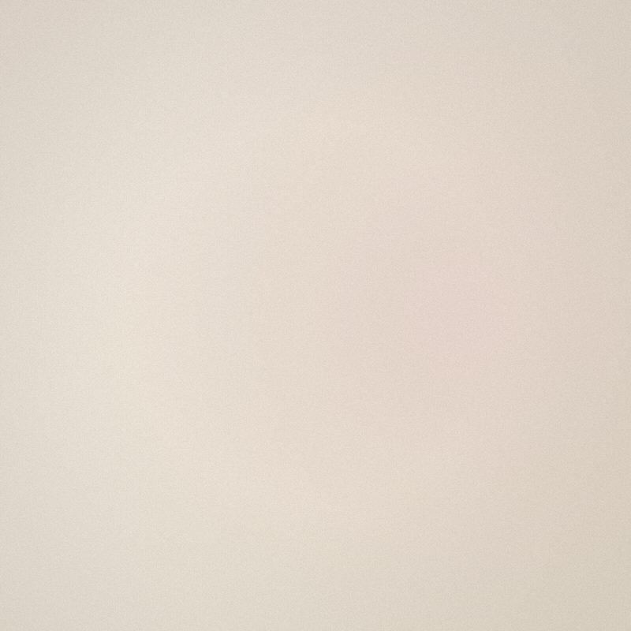
기미
경계가 흐릿하고 넓게 번지는 색소. 열과 호르몬에 예민해 저자극 관리가 핵심입니다.
MELASMAPIGMENTATION PROGRAM
기미 · 주근깨 · 잡티. 겉으로 드러난 색소가 아닌
생성의 원인부터 진단하는 메디컬오의 맞춤 색소 솔루션.
WHY MEDICALO
같은 기미도 사람마다 원인과 깊이가 다릅니다. 자외선, 호르몬, 열, 그리고 피부 장벽의 상태까지 — 메디컬오는 색소가 생기는 근본 원인을 진단하고, 재발까지 고려한 맞춤 프로토콜을 설계합니다.
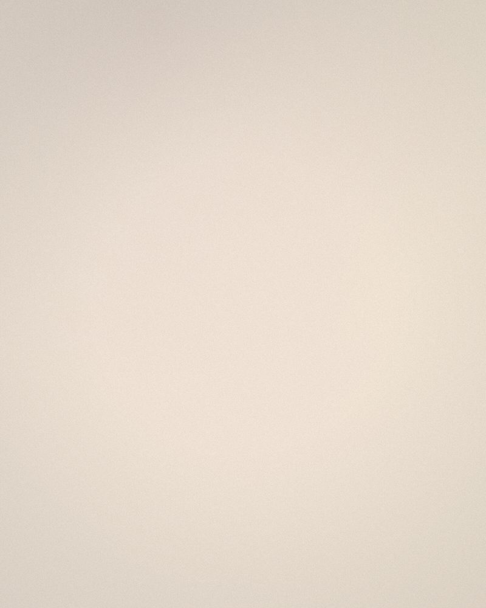
PIGMENTATION TYPES
정확한 유형 진단이 치료의 시작입니다. 메디컬오는 색소의 종류에 따라 접근을 달리합니다.

경계가 흐릿하고 넓게 번지는 색소. 열과 호르몬에 예민해 저자극 관리가 핵심입니다.
MELASMA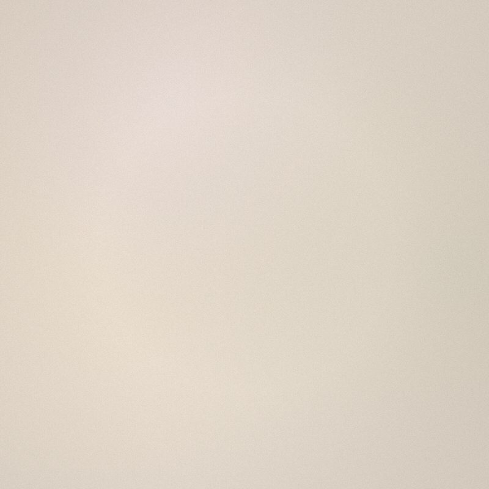
작은 점 형태로 흩어진 색소. 자외선에 의해 짙어지며 정밀 레이저에 잘 반응합니다.
FRECKLES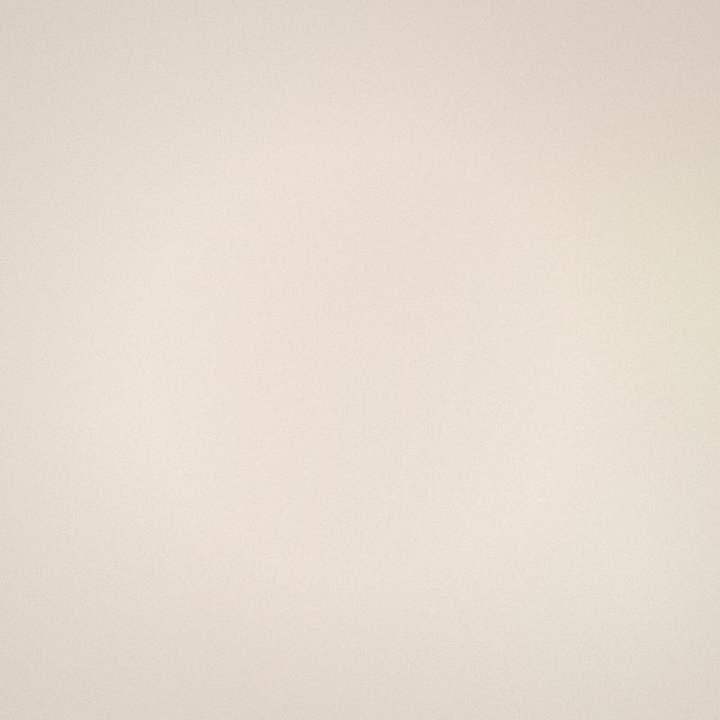
경계가 뚜렷한 갈색 색소. 표피층에 위치해 비교적 빠른 개선을 기대할 수 있습니다.
LENTIGO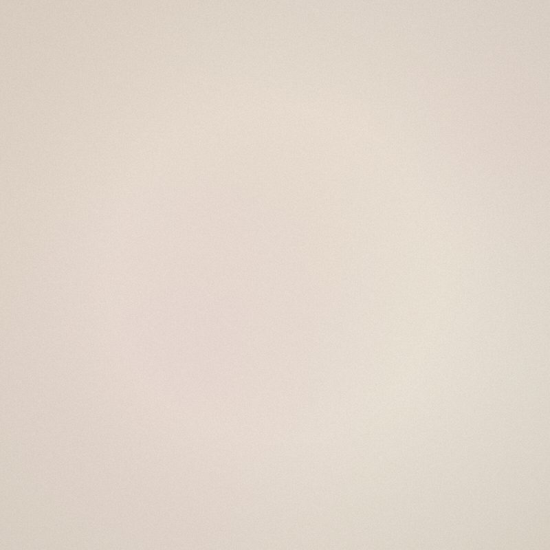
피부 깊은 진피층의 청회색 색소. 전용 파장의 레이저로 단계적으로 접근합니다.
DERMALSOLUTION PROGRAM
육안으로 보이지 않는 표피·진피 색소까지, 피부 분석 장비로 색소의 깊이와 분포를 데이터로 확인합니다.
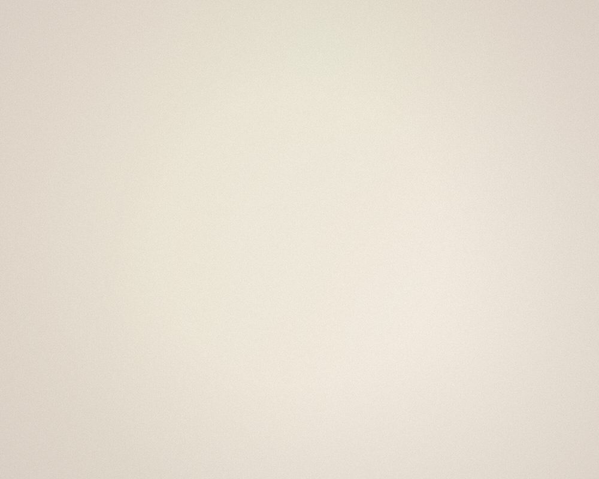
하나의 장비로 모든 색소를 다루지 않습니다. 유형과 깊이에 맞춰 파장과 강도를 조합한 맞춤 프로토콜을 적용합니다.
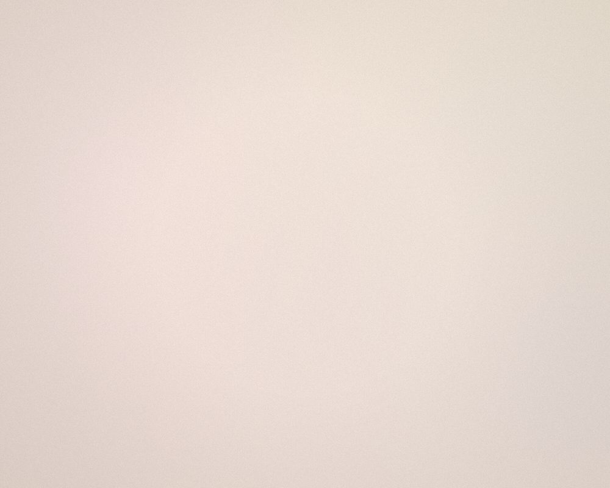
치료만큼 중요한 것은 유지입니다. 피부 장벽을 회복하고 색소 재생성을 억제하는 사후 관리를 함께 설계합니다.
BEFORE & AFTER
동일 조건에서 촬영한 실제 경과 사례입니다.
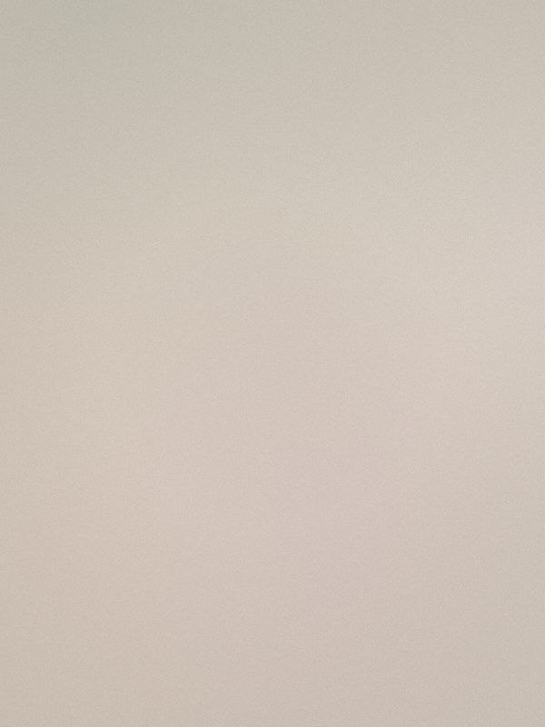
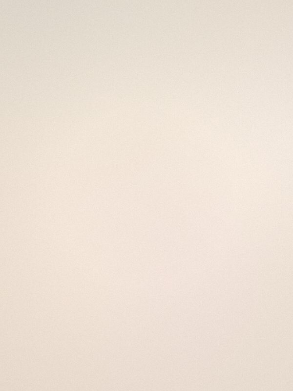
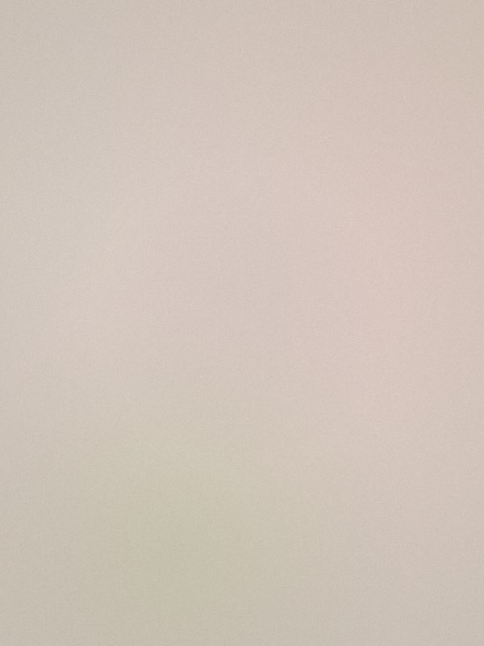
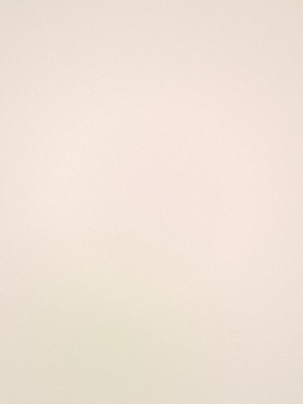
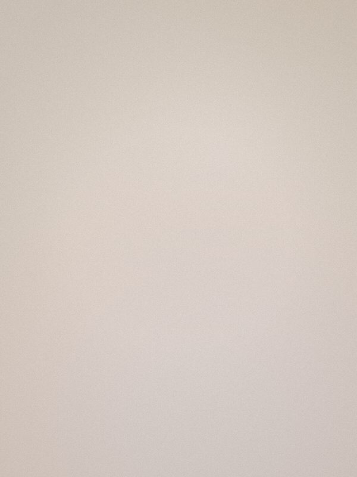
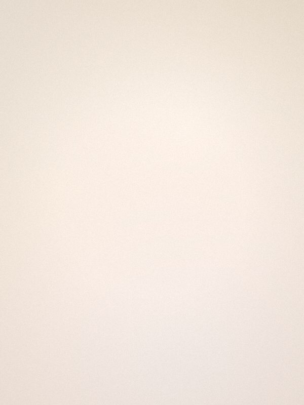
※ 시술 효과는 개인의 피부 상태에 따라 차이가 있을 수 있습니다.
RESEARCH & EQUIPMENT
메디컬오는 피부과학에 기반한 프로토콜을 지속적으로 업데이트하며, 검증된 장비만을 도입합니다.
색소 유형별 최적 파장을 선택해 주변 조직 손상을 최소화합니다.
표피·진피 색소를 정량 분석해 치료 계획을 데이터로 설계합니다.
치료 후 피부 장벽 회복과 색소 재발 억제를 함께 다룹니다.
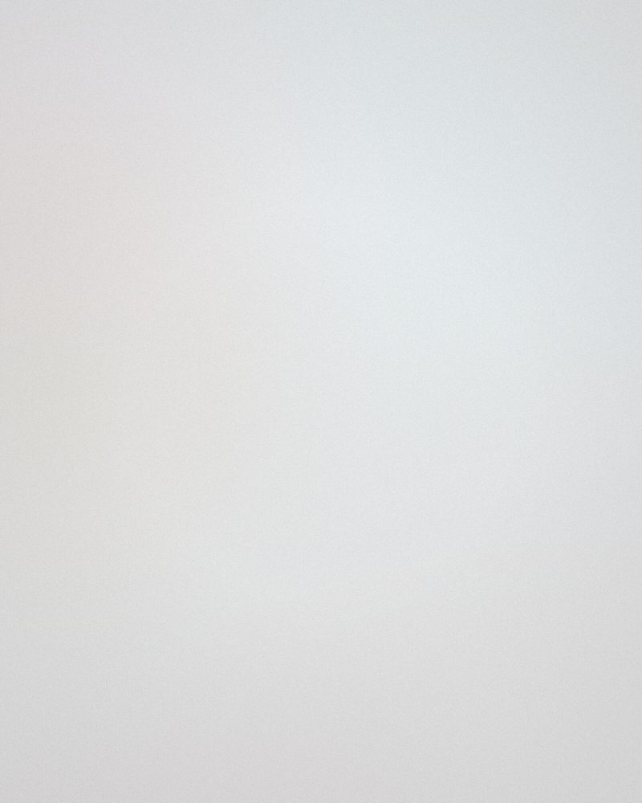
강한 자외선의 계절, 짙어진 색소를 위한 진단 + 첫 시술 패키지를 특별가로 제안합니다.
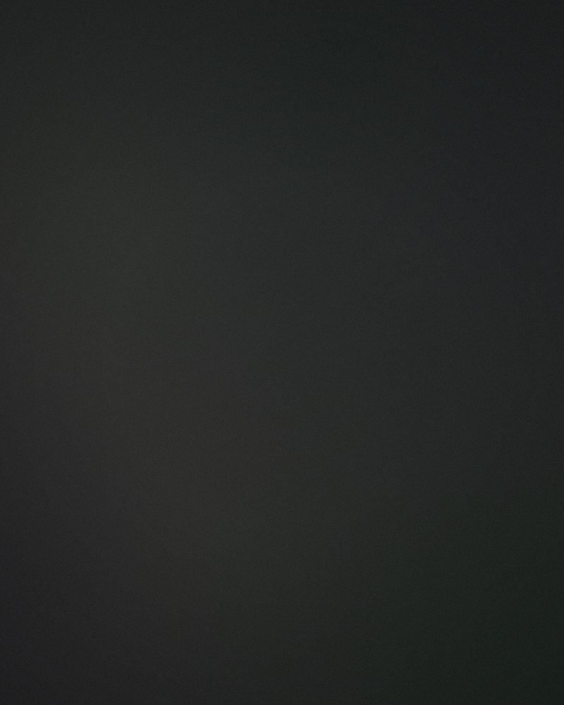